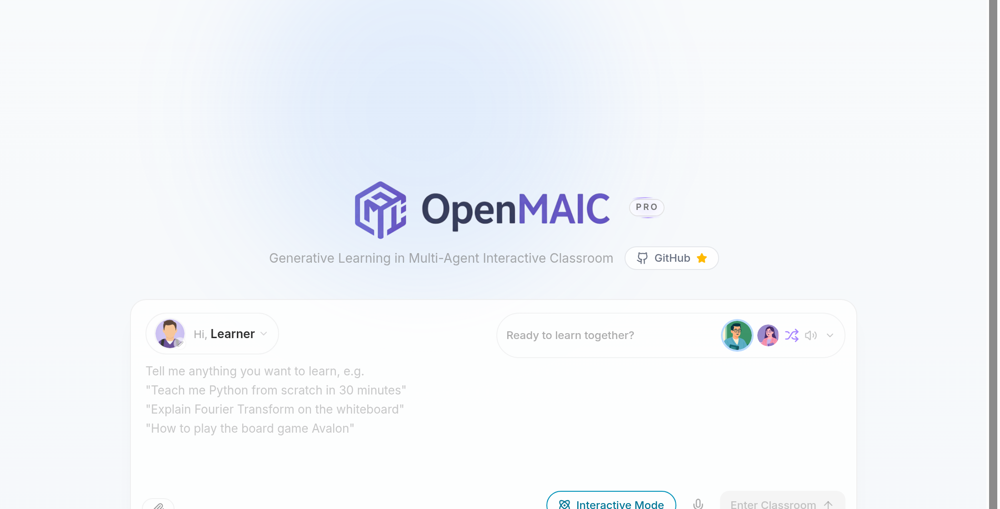
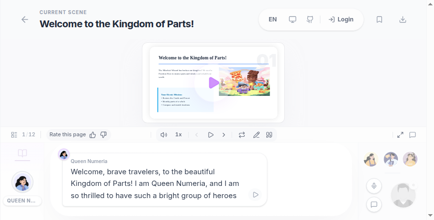
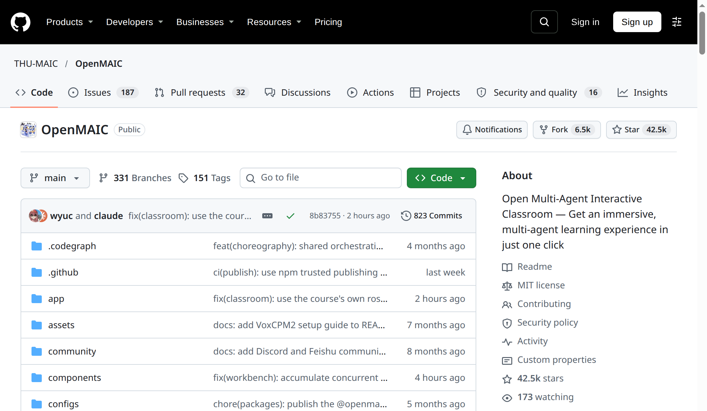

כיתה של מורים AI, בחינם
הנה מה שביקשתם: OpenMAIC, כיתה של מורים AI מאוניברסיטת צינגחואה. כותבים נושא, או מעלים מסמך, ומקבלים שיעור שלם: מצגת, מורה שמסביר ומצייר על הלוח, חברים לכיתה שמתווכחים, ובוחן קצר בסוף.
הקישורים
- 🌐 האתר, לנסות שיעור: open.maic.chat
- 💻 הקוד הפתוח (רישיון MIT): github.com/THU-MAIC/OpenMAIC
איך מתחילים
- נכנסים ל-open.maic.chat מהמחשב או מהטלפון.
- גוללים לשיעורים המוכנים, או מחפשים Fractions בתיבת החיפוש, ופותחים אחד. השיעור נפתח עם מצגת, מורה AI שמדבר וחברים לכיתה.
- רוצים שיעור על נושא משלכם? כותבים בתיבה Tell me anything you want to learn מה רוצים ללמוד, או מצרפים מסמך. ייתכן שהאתר יבקש להתחבר לפני שהוא בונה שיעור חדש.
- באמצע השיעור אפשר לעצור ולשאול שאלה. בסוף יש בוחן קצר.
מה צריך לדעת
- השיעורים המוכנים נפתחים בלי הרשמה (בדקנו ב-3.11.2026). רובם באנגלית ובסינית. ליצירת שיעור חדש כנראה צריך להתחבר.
- הממשק והשיעורים המוכנים באנגלית. אפשר לבקש נושא בעברית, אבל לא בדקנו כמה טוב זה יוצא.
- למתקדמים: מריצים את הקוד מ-GitHub על המחשב שלכם. צריך מפתח API של מודל שפה, והוא בתשלום לפי שימוש אצל הספק.
- המורה הוא AI. הוא יכול לטעות, אז עובדות חשובות בודקים במקור.
🔒 לא מעלים מסמכים עם פרטים מזהים, תעודות או סיסמאות.
ההוכחות מהריל
צילומי מסך שצילמנו ב-3.11.2026:



מקורות
- README של הפרויקט: תיאור היכולות ורישיון MIT, "commercial use is permitted free of charge".
- ה-changelog: גרסה 0.1.0 יצאה ב-26.3.2026.
- המאמר: "From MOOC to MAIC", Journal of Computer Science and Technology, 2026.
על איזה נושא הייתם רוצים שיעור? כתבו לנו בתגובות.
כל יום כלי AI אחד ששווה להכיר. עקבו ב-@critifly